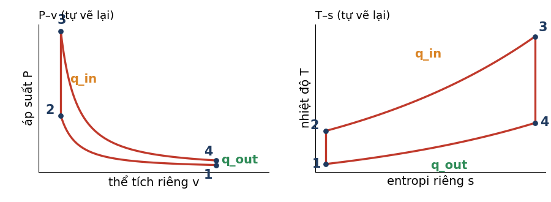
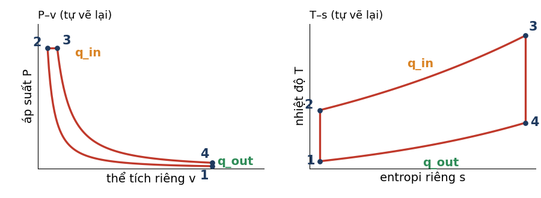
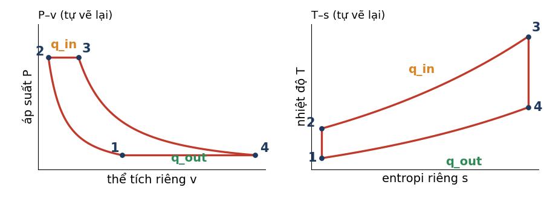
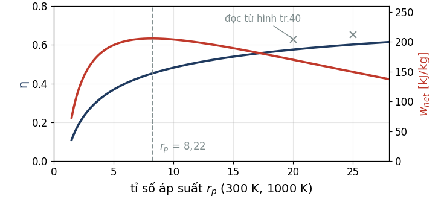
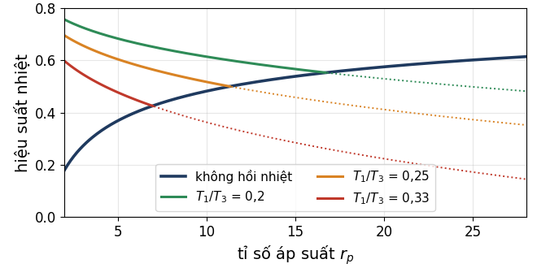
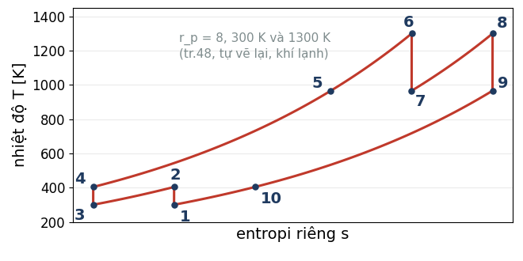
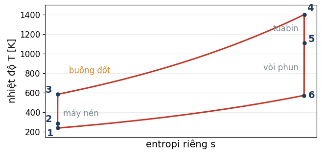
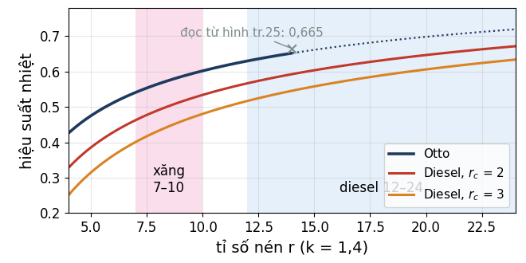

Nền tảng: chu trình công suất, Carnot và giả thiết không khí-chuẩn
Slide tr.3–14
Định nghĩa, lý tưởng hoá, hiệu suất nhiệt
Carnot và giả thiết không khí-chuẩn
Phần 1 · Nền tảng
Chu trình lý tưởng giữ lại đặc điểm chính của chu trình thực và cho phép tính được các tham số chi phối
Slide Ch.2 tr.3–9
Chu trình công suất (power cycle) sinh công ra; chu trình lạnh (refrigeration cycle) tạo hiệu ứng làm lạnh. Thiết bị chạy theo chu trình công suất gọi là động cơ (engine) (tr.4).
Chu trình khí: môi chất ở pha khí suốt chu trình; chu trình hơi: có pha lỏng ở một phần (tr.5). Chu trình kín: môi chất trở về trạng thái đầu và tuần hoàn; chu trình hở: môi chất được đổi mới mỗi chu trình (tr.6).
Đốt trong: nhiên liệu cháy ngay trong biên hệ thống (động cơ ô tô); đốt ngoài: nhiệt cấp từ nguồn ngoài (lò, địa nhiệt, lò phản ứng, mặt trời; nhà máy hơi nước) (tr.7).
Giả thiết lý tưởng hoá (tr.8–9)
Hệ quả
Không có ma sát
không có sụt áp trong ống và bộ trao đổi nhiệt
Nén và giãn gần cân bằng (quasi-equilibrium)
vẽ được quá trình thành đường liền trên P–v
Ống nối cách nhiệt tốt
bỏ qua truyền nhiệt qua ống
📖 Giải thích cho người mới bắt đầu
Slide tr.8 vẽ chu trình thực (đường nét đứt, góc bo tròn) bên cạnh chu trình lý tưởng (đường liền). Ta dùng chu trình lý tưởng vì nó đủ gần thực tế để so sánh các lựa chọn thiết kế (tăng tỉ số nén? tăng nhiệt độ?) mà không cần mô hình hoá ma sát hay tốc độ cháy.
Phần 1 · Nền tảng
Hiệu suất nhiệt là công thực chia cho nhiệt vào, và công thực chính là diện tích bên trong chu trình
$W_{net}$công thực = diện tích bên trong chu trình trên P–v (và q_net trên T–s)
$Q_{in}$nhiệt cấp vào chu trình
Slide Ch.2 tr.10Bổ sung từ sách: Cengel §9-1
Công thực mỗi kg: $w_{net}=\oint P\,dv=q_{in}-q_{out}$ (định luật 1 cho chu trình, ΔU = 0).
Hai giản đồ của slide: P–v (diện tích = công) và T–s (diện tích = nhiệt). Cả hai đều dùng suốt chương.
📖 Giải thích cho người mới bắt đầu
Động cơ nhiệt biến nhiệt thành công, nên đo hiệu suất bằng: thu về bao nhiêu công trên mỗi đơn vị nhiệt phải trả. Phần nhiệt không biến thành công (Q_out) bị thải ra môi trường nên η luôn nhỏ hơn 1.
Phần 1 · Nền tảng
Carnot là trần hiệu suất giữa hai nguồn nhiệt, nhưng không chế tạo được nên ta dùng các chu trình Otto, Diesel, Brayton
Slide Ch.2 tr.11–13Bổ sung từ sách: Cengel §9-2; Farokhi §4.3.1.6
Bốn quá trình thuận nghịch: 1→2 nhận nhiệt đẳng nhiệt (TH), 2→3 giãn đẳng entropi, 3→4 thải nhiệt đẳng nhiệt (TL), 4→1 nén đẳng entropi; có thể thực hiện trong hệ kín (xi-lanh–piston) hoặc hệ hở (hai tuabin, hai máy nén) (tr.11–12).
$\eta=1-300/1000=0,70$: đây là trần lý thuyết 0,70 của mọi chu trình giữa hai nhiệt độ này (đường trục tung 0–0,7 của hình slide tr.40). Hiệu suất lý tưởng thực tế thấp hơn nhiều (Brayton 8,2: 0,452).
Slide tr.13: "không thực tế chế tạo động cơ gần với Carnot; nhiệt độ nguồn nóng/lạnh dùng được trong thực tế bị giới hạn". Farokhi §4.3.1.6 (tr.194) chứng minh bằng ∮T ds: η = 1 − T₀/T_t4.
📖 Giải thích cho người mới bắt đầu
Trên giản đồ T–s Carnot là hình chữ nhật: hai cạnh ngang là hai đường nhiệt độ không đổi, hai cạnh đứng là đẳng entropi. Công thức chỉ phụ thuộc hai nhiệt độ tuyệt đối (kelvin); đổi °C sang K trước khi tính.
Phần 1 · Nền tảng
Giả thiết không khí-chuẩn biến mọi động cơ thành một vòng khí lý tưởng nhận và thải nhiệt
Slide Ch.2 tr.14Bổ sung từ sách: Cengel §9-3
Môi chất là không khí tuần hoàn trong vòng kín và luôn là khí lý tưởng.
Mọi quá trình tạo nên chu trình đều thuận nghịch bên trong.
Quá trình cháy được thay bằng cấp nhiệt từ nguồn ngoài (hình slide: buồng đốt thật so với "Heating section").
Quá trình xả được thay bằng thải nhiệt đưa môi chất về trạng thái đầu.
Mô hình nhiệt dung
Dữ liệu
Dùng khi
Khí lạnh-chuẩn (cold-air-standard)
cp = 1,005; cv = 0,718 kJ/kg·K; k = 1,4; R = 0,287 (A-2a, 300 K)
công thức đóng 1 − 1/r^(k−1)…
Nhiệt dung thay đổi
bảng A-17: h, u, Pr, vr theo T
đề ghi "accounting for the variation of specific heats"
📖 Giải thích cho người mới bắt đầu
Có hai mức chính xác: dùng k hằng (khí lạnh) để có công thức đóng, hay dùng bảng A-17 để kể đến việc c_p tăng theo nhiệt độ. Tutorials I dùng cả hai: #1, #4, #5, #7, #8 dùng bảng; #2, #3, #6 dùng nhiệt dung hằng. Đề không nói rõ thì ghi giả định vào lời giải.
PHẦN 2/5
02
Phương pháp: động cơ piston, Otto, Diesel và Brayton
Slide tr.15–40
r, MEP, r_c, r_p, η
r_p cho công cực đại
Phần 2 · Phương pháp
MEP quy công thực của chu trình về một áp suất trung bình, nên so sánh được các động cơ cùng kích thước
$V_{TDC}$thể tích chết (clearance volume) ở điểm chết trên
$V_{BDC}-V_{TDC}$thể tích làm việc (displacement volume)
$W_{net}=MEP\cdot V_d$MEP là áp suất không đổi cho cùng công thực trên hành trình (tr.17)
SI: bugi đánh lửa hỗn hợp; CI: không khí nén quá nhiệt độ tự cháy, nhiên liệu phun vào (tr.18).
Bốn kỳ = 2 vòng quay ⇒ công suất $\dot W=MEP\cdot V_d\cdot N/2$ (N: vòng/s) Bổ sung từ sách: Cengel 9–59
📖 Giải thích cho người mới bắt đầu
Hình slide tr.17 vẽ hình chữ nhật có diện tích bằng diện tích chu trình trên P–V: chiều cao chính là MEP. MEP lớn hơn ⇒ cùng kích thước xi-lanh cho nhiều công hơn mỗi chu trình. Ví dụ: động cơ 2,4 L với MEP 900 kPa cho 2,16 kJ mỗi chu trình.
Phần 2 · Phương pháp
Hiệu suất Otto chỉ phụ thuộc tỉ số nén và k: nén càng mạnh hiệu suất càng cao

Tự vẽ lại (khí lạnh, r = 8, T₃ = 1800 K minh hoạ); so với slide tr.20.
1→2 đẳng entropi; 2→3 đẳng tích nhận nhiệt; 3→4 đẳng entropi; 4→1 đẳng tích thải nhiệt (tr.20). Vì T₁/T₂ = T₄/T₃ = r^(1−k) nên η chỉ phụ thuộc r và k (tr.23–24).
Xăng dùng r ≈ 7–10 (vùng hồng tr.25): η = 0,541 đến 0,602 với k = 1,4.
Slide Ch.2 tr.19–25Bổ sung từ sách: Cengel §9-5
📖 Giải thích cho người mới bắt đầu
Chu trình Otto là chu trình lý tưởng của động cơ đánh lửa (xăng). Nhiệt được cấp ở thể tích không đổi (cháy nhanh khi piston ở gần điểm chết trên). Giới hạn thực tế của tỉ số nén là hiện tượng kích nổ của hỗn hợp xăng–không khí, nên r chỉ khoảng 7–10.
Phần 2 · Phương pháp
Diesel khác Otto ở chỗ cấp nhiệt đẳng áp; cùng tỉ số nén nó kém hơn Otto nhưng chạy ở tỉ số nén cao hơn nhiều

Tự vẽ lại (khí lạnh, r = 18, r_c = 2); so với slide tr.28.
Chỉ quá trình 2→3 khác Otto (đẳng áp thay vì đẳng tích, tr.28). Ngoặc vuông luôn > 1 ⇒ ηOtto > ηDiesel cùng r (tr.31); rc → 1 thì Diesel → Otto. Diesel thực tế vẫn hơn vì r = 12–24 (tr.27, 32); hiệu suất động cơ diesel lớn thực khoảng 35–40 % (tr.32).
Slide Ch.2 tr.26–32Bổ sung từ sách: Cengel §9-6
📖 Giải thích cho người mới bắt đầu
Động cơ diesel chỉ nén không khí nên không sợ tự cháy sớm; nhiên liệu cháy khi vòi phun đưa vào không khí nóng. Tỉ số cắt r_c = V₃/V₂ cho biết phần hành trình mà nhiệt được cấp: r_c càng lớn, nhiệt cấp càng nhiều nhưng hiệu suất càng giảm.
Phần 2 · Phương pháp
Brayton có cùng cấu trúc hiệu suất với Otto, nhưng nén và giãn xảy ra liên tục trong máy quay nên chạy với tỉ số áp suất

Tự vẽ lại (khí lạnh, r_p = 8, 300 K và 1300 K); so với slide tr.36.
Brayton: nhiệt, hiệu suất, tỉ số công hồi (tr.37–39)
1→2 nén đẳng entropi (máy nén); 2→3 đẳng áp nhận nhiệt (buồng đốt); 3→4 giãn đẳng entropi (tuabin); 4→1 đẳng áp thải nhiệt (tr.35). Tuabin khí thực làm việc theo chu trình hở, mô hình hoá thành kín bằng hai bộ trao đổi nhiệt (tr.33–34).
Cùng một dạng với Otto: số mũ (k−1)/k và r_p = P₂/P₁. Dùng $T_2/T_1=r_p^{(k-1)/k}=T_3/T_4$ (tr.38).
Slide Ch.2 tr.33–39Bổ sung từ sách: Cengel §9-8
📖 Giải thích cho người mới bắt đầu
Hãy nhớ phép tương ứng: Otto (đẳng tích, tỉ số nén r, mũ k−1) ↔ Brayton (đẳng áp, tỉ số áp r_p, mũ (k−1)/k). Khí lạnh: η Brayton không phụ thuộc nhiệt độ T₃, nhưng T₃ quyết định công thực. Máy nén tiêu tốn một phần lớn công tuabin: tỉ số công hồi cỡ 40 % ở ví dụ Tutorials I.
Phần 2 · Phương pháp
Với nhiệt độ cố định, công thực của Brayton đạt cực đại ở một tỉ số áp xác định, trong khi hiệu suất vẫn tăng theo r_p

Tự vẽ lại từ công thức k = 1,4; dấu × là điểm đọc từ hình slide tr.40 (±0,02).
Công thực tăng rồi giảm, còn hiệu suất tăng mãi: công cực đại và hiệu suất cực đại không cùng điểm. Hình trái tr.40 (η theo r_p) cao hơn công thức k = 1,4 ở r_p lớn: xem mục lỗi slide.
Slide Ch.2 tr.40
📖 Giải thích cho người mới bắt đầu
Vì sao có cực đại? Khi r_p tăng, nhiệt độ sau máy nén T₂ tăng làm công máy nén tăng nhanh; đồng thời nhiệt độ ra tuabin T₄ giảm làm công tuabin tăng chậm hơn. Tại r_p rất lớn T₂ = T₃ và công thực bằng không. Kỹ sư chọn r_p quanh cực đại công khi cần động cơ gọn, nhẹ (máy bay), và cao hơn khi cần hiệu suất.
PHẦN 3/5
03
Ví dụ có lời giải: Tutorials I và Cengel Ch.9
Tutorials I tr.1–23, 28–29
Otto, Diesel, Brayton với bảng A-17
Brayton thực và hồi nhiệt
Phần 3 · Ví dụ có lời giải
Otto với nhiệt dung thay đổi: hiệu suất 52,3 %, thấp hơn 56,5 % của công thức khí lạnh
Tutorials I #1 (= Cengel Ví dụ 9–2): Otto, r = 8, 100 kPa, 17 °C (lấy 290 K), qin = 800 kJ/kg, nhiệt dung riêng thay đổi (A-17).
Bước
Phép tính
Kết quả
1→2
vr2 = vr1/r = 676,1/8 = 84,51
T2 = 652,4 K; u2 = 475,11 kJ/kg
2→3
u3 = u2 + qin
u3 = 1 275,11; T3 = 1 575,1 K; P3 = 4 345 kPa
3→4
vr4 = r·vr3
T4 = 795,6 K; u4 = 588,74 kJ/kg
4→1
qout = u4 − u1
381,83 kJ/kg
Công, η
wnet = qin − qout; η = wnet/qin
418,17 kJ/kg; η = 0,523
MEP
wnet/[v1(1 − 1/r)], v1 = RT1/P1 = 0,832 m³/kg
574 kPa
Slide: 1575,1 K; 4,345 MPa; 418,17 kJ/kg; 52,3 %; 574 kPa. Khí lạnh cho η = 0,565 (tr.6): cao hơn vì c_v thật tăng theo T. Tutorials I tr.1–6
📖 Giải thích cho người mới bắt đầu
Làm theo thứ tự các trạng thái: (1) tra u₁, v_r1 ở T₁; (2) chia v_r cho r để tìm T₂ (nội suy tuyến tính trong cột v_r); (3) cộng q_in vào u₂ để tìm u₃ và T₃; (4) nhân v_r₃ với r để tìm T₄; (5) tính q_out, công, η, MEP. Đây là đường tắt thay công thức khí lạnh khi nhiệt độ cao.
Phần 3 · Ví dụ có lời giải
Bài Diesel: tính T₃ từ tỉ số cắt (hoặc ngược lại r_c từ T_max), rồi dùng c_p ở quá trình đẳng áp và c_v ở quá trình đẳng tích
Tutorials I #2 / #6 (Diesel): #2 dùng đơn vị Anh (r = 18, rc = 2, 14,7 psia, 80 °F, 117 in³, cp = 0,240, cv = 0,171 Btu/lbm·R); #6 dùng SI (r = 20, 95 kPa, 20 °C, Tmax = 2200 K, cp = 1,005, cv = 0,718).
Đại lượng
#2 (đơn vị Anh)
#6 (SI)
T2; T3
1 716 R; 3 432 R
971,1 K; 2 200 K
rc
2
2,265
T4
1 425 R; P4 = 38,8 psia
920,6 K
qin; qout
2,049 Btu; 0,753 Btu (m = 0,00498 lbm)
1 235,0; 450,6 kJ/kg
wnet
1,296 Btu
784,4 kJ/kg
η
0,632
0,6351
MEP
109,5 psia
932,8 kPa
Slide #2: 1716 R; 841 psia; 3432 R; 1425 R; 38,8 psia; 1,297 Btu; 63,2 %; 110 psia. Cengel 9–51 (= #6): 63,5 %; 933 kPa. Lưu ý #2: nhiệt độ/áp suất dùng k = 1,4 nhưng nhiệt lượng dùng c_p, c_v (tỉ số 1,4035); η chính xác với k = 1,4 là 0,6316. Tutorials I tr.7–13Tutorials I tr.17
📖 Giải thích cho người mới bắt đầu
Bẫy: quá trình cấp nhiệt đẳng áp dùng c_p, quá trình thải nhiệt đẳng tích dùng c_v. Khi đề cho T_max (bài #6) thì r_c không cho trước: r_c = T₃/T₂. Với đơn vị Anh luôn đổi °F sang R (+460) và chú ý 1 Btu = 778,17 lbf·ft cho MEP.
Phần 3 · Ví dụ có lời giải
Brayton lý tưởng: máy nén ăn khoảng 40 % công tuabin và hiệu suất là 42,6 %
Ví dụ Brayton của Tutorials I (= Cengel 9–5): rp = 8, 300 K và 1300 K, nhiệt dung thay đổi.
Bước
Tra bảng A-17
Kết quả
1→2
Pr1 = 1,386 ⇒ Pr2 = 8·1,386 = 11,09
T2 = 539,8 K (slide 540); h2 = 544,18
3→4
Pr3 = 330,9 ⇒ Pr4 = 41,36
T4 = 770,3 K (slide 770); h4 = 789,39
w
h2 − h1; h3 − h4
243,99; 606,58 kJ/kg
rbw
wcomp/wturb
0,4022 (slide 0,403)
η
wnet/qin
0,4257 (khí lạnh 0,448)
Tutorials I #8 (không có lời giải): máy nén 300 K → 580 K (thực) ở rp = 7, qin = 950 kJ/kg, ηt = 0,86 ⇒ T3 = 1 417 K, wturb = 542,0, wcomp = 285,8 kJ/kg, wcomp/wturb = 0,527, η = 0,270 (giả định: P3 = P2, xả tuabin ở 100 kPa). Tutorials I tr.18–23Tutorials I tr.29
📖 Giải thích cho người mới bắt đầu
Slide làm tròn T₂ = 540 K rồi lấy h₂ = 544,35 (hàng 540 K), nên in r_bw = 0,403; nội suy chính xác theo P_r cho 539,8 K, h₂ = 544,18 và r_bw = 0,4022. Sai khác 0,2 % là làm tròn, không phải lỗi (ghi trong mục lỗi nguồn).
Phần 3 · Ví dụ có lời giải
Tổn thất máy nén và tuabin hạ hiệu suất từ 42,6 % xuống 26,6 %; bộ hồi nhiệt kéo lên 36,9 % mà không đổi công thực
Cengel 9–6, 9–7: cùng chu trình (rp = 8, 300 K, 1300 K) nhưng ηc = 80 %, ηt = 85 %; rồi thêm bộ hồi nhiệt ε = 80 %.
Sách: r_bw = 0,592; η = 26,6 %; T₄ₐ = 853 K; h₅ = 825,37; η = 36,9 %. Bổ sung từ sách: Cengel §9-8, §9-9 (tr.513–516)
📖 Giải thích cho người mới bắt đầu
Máy nén thực tiêu tốn nhiều công hơn (chia η_c) và tuabin thực cho ít công hơn (nhân η_t), nên r_bw tăng từ 0,40 lên 0,59: gần 60 % công tuabin chỉ để chạy máy nén. Khí ra tuabin (853 K) nóng hơn khí ra máy nén (598 K), vì vậy bộ hồi nhiệt trao được nhiệt từ khí xả cho khí nén.
PHẦN 4/5
04
Bẫy và mở rộng: hồi nhiệt, làm mát trung gian, hâm nóng và lỗi slide
Slide tr.41–48
Hồi nhiệt, làm mát trung gian, hâm nóng
Sáu lỗi/sai khác của slide
Phần 4 · Bẫy và mở rộng
Hồi nhiệt tiết kiệm nhiên liệu ở r_p thấp, nhưng nếu r_p vượt giao điểm thì khí xả nguội hơn khí nén và hồi nhiệt vô ích

Tự vẽ lại theo công thức slide tr.45 (khí lạnh); phần chấm là sau giao điểm với đường không hồi nhiệt.
Giao điểm với đường không hồi nhiệt: $r_p=(T_3/T_1)^{k/[2(k-1)]}$ (trùng rp cho công cực đại): trên điểm đó T4 < T2 nên không còn gì để hồi nhiệt. Lỗi slide tr.44: mẫu số ε ghi "regen,mã" = "regen,max".
Slide Ch.2 tr.41–45Bổ sung từ sách: Cengel §9-9
📖 Giải thích cho người mới bắt đầu
Slide tr.41 nêu ba hướng nâng hiệu suất tuabin khí: tăng nhiệt độ vào tuabin (vật liệu, làm mát cánh), tăng hiệu suất các bộ phận, bổ sung hồi nhiệt, làm mát trung gian, hâm nóng (gần gấp đôi hiệu suất của các tuabin đầu tiên). Hồi nhiệt (tr.42–45) dùng khí xả nóng làm nóng không khí ra khỏi máy nén trước buồng đốt nên cùng công thực mà cần ít nhiên liệu hơn.
Phần 4 · Bẫy và mở rộng
Làm mát trung gian và hâm nóng làm tăng công thực nhưng tăng cả nhiệt vào, nên chỉ đáng giá khi đi kèm hồi nhiệt

Tự vẽ lại (khí lạnh) theo slide tr.48 (tiêu đề đầy đủ: "intercooling, reheating, and regeneration").
Nén nhiều cấp có làm mát trung gian giảm công nén; giãn nhiều cấp có hâm nóng tăng công tuabin; chia đều tỉ số áp cho các cấp là tốt nhất (Pm = √(P1P3) với hai cấp) (tr.46–47).
Cengel Ví dụ 9–8 (rp = 8, 300 K, 1300 K): không hồi nhiệt rbw = 0,304, η = 0,358 (thấp hơn một cấp 0,426); thêm hồi nhiệt lý tưởng η = 0,696.
Hâm nóng bằng cách phun thêm nhiên liệu vào khí xả giàu oxy (tr.47). Khi số cấp → ∞, hiệu suất tiến tới Carnot (tr.48).
Slide Ch.2 tr.46–48Bổ sung từ sách: Cengel §9-10
📖 Giải thích cho người mới bắt đầu
Công nén ổn định tỉ lệ với thể tích riêng của khí, nên làm mát khí giữa các cấp (giữ v nhỏ) giảm công nén; ngược lại hâm nóng giữa các cấp giãn (giữ v lớn) tăng công tuabin. Nhưng nhiệt cấp vào cũng tăng (cấp thêm ở buồng hâm nóng), nên η một mình giảm; khí xả nóng hơn và khí nén nguội hơn làm hồi nhiệt có nhiều tiềm năng hơn.
Phần 4 · Bẫy và mở rộng
Sáu chỗ trên slide không khớp phép tính lại: nhớ chúng để không nhầm khi so với công thức
Chỗ trên slide
Nội dung
Kiểm lại (script)
Ch.2 tr.25
Đường η_Otto(r) kết thúc ≈ 0,665 tại r = 14
công thức k = 1,4: 0,652; chênh 0,013 (trong sai số đọc hình ±0,02)
Ch.2 tr.30
Nhãn "η th,Otto" trên công thức Diesel
phải là th,Diesel (nội dung đúng: 1 − q_out/(k·q_in))
Ch.2 tr.40
Đường η_Brayton(r_p) cao hơn công thức k = 1,4
r_p = 20: hình ≈ 0,63, công thức 0,575; r_p = 25: ≈ 0,653 so với 0,601
Ch.2 tr.40
r_p cho công cực đại = 8,2
đúng với k = 1,4: 8,22; với c_p(T) (đa thức, CoolProp) ≈ 9,1; công thực rất phẳng: w(8,2)/w_max = 0,998
Ch.2 tr.44
"q regen,mã" ở mẫu số ε
= q_regen,max
Tutorials I #2
Nhiệt độ dùng k = 1,4, nhiệt lượng dùng c_p/c_v = 1,4035
η = 0,6325 (slide 0,632) so với 0,6316 (k = 1,4 chính xác)
Các sai khác này được ghi trong mục "Lỗi và nghi vấn của nguồn" cuối trang và không được sửa lặng lẽ: lời giải của giảng viên giữ nguyên.
📖 Giải thích cho người mới bắt đầu
Đa số là sai khác nhỏ (làm tròn, đọc hình) hoặc lỗi chữ (nhãn, "mã"). Đáng chú ý nhất là hình tr.40: η thực của đồ thị cao hơn công thức k = 1,4 ở r_p lớn (đọc 0,63 tại 20 so với 0,575), nên đừng dùng đồ thị đó để kiểm bài làm bằng công thức khí lạnh.
PHẦN 5/5
05
Ứng dụng trên tàu bay: chu trình phản lực lý tưởng và tổng kết
Slide tr.49–55
Turbojet lý tưởng, lực đẩy, η_P
Turbofan, turboprop, ramjet; bảng tổng kết
Phần 5 · Ứng dụng trên tàu bay và tổng kết
Turbojet là Brayton cắt ngắn: tuabin chỉ chạy máy nén, phần năng lượng còn lại trong vòi phun biến thành lực đẩy

Tự vẽ lại: 1→2 khuếch tán, 2→3 máy nén, 3→4 buồng đốt, 4→5 tuabin, 5→6 vòi phun; so với slide tr.51.
Khác Brayton đơn giản: tuabin chỉ giãn đủ để chạy máy nén và thiết bị phụ; khí còn áp cao giãn tiếp trong vòi phun thành động năng. Công thực trên trục bằng 0 (tr.49, 51).
Bộ khuếch tán, máy nén, tuabin, vòi phun đều đẳng entropi; $T_2=T_1+\frac{V_1^2}{2c_p}$, $T_5=T_4-T_3+T_2$ (công tuabin = công nén).
Đại lượng η_P của slide/Cengel (công đẩy chia nhiệt cấp) tương ứng hiệu suất tổng η_o của Farokhi và El-Sayed; hiệu suất đẩy của họ là 2V/(V + V_e) (m01).
Ở máy bay, công thực trên trục bằng không nhưng lực đẩy khác không: động lượng của khí ra khỏi vòi phun lớn hơn động lượng khí vào. Chu trình này nối chương 2 với chương 1: nhiệt độ, áp suất tính được ở đây cho biết vận tốc phụt dùng trong công thức lực đẩy của m01.
Phần 5 · Ứng dụng trên tàu bay và tổng kết
Ví dụ turbojet: khuếch tán và nén đưa T lên 927 R, công tuabin = công nén kéo T₅ xuống 2013 R, vòi phun cho V₆ ≈ 3288 ft/s
Cengel Ví dụ 9–9 (khí lạnh, đơn vị Anh): 850 ft/s, 5 psia, −40 °F; rp = 10; T4 = 2000 °F; 100 lbm/s; cp = 0,240 Btu/lbm·R.
Sách Cengel in: 480 R; 927 R; 2013 R; 39,7 psia; 3288 ft/s; 22,5 %. El-Sayed in Vj = 1044,34 m/s, ṁa = 16,06 kg/s, ηo = 27,75 %: lệch vì hai chỗ tính sai trong sách (T03 = 587,5 thay vì 585,7; T7 = 563,6 thay vì 573,6) — xem mục lỗi nguồn.
📖 Giải thích cho người mới bắt đầu
Thứ tự tính cố định: (1) khuếch tán tăng T và P nhờ động năng bay; (2) máy nén tăng tiếp; (3) buồng đốt đưa T lên giới hạn tuabin; (4) tuabin giảm T đúng bằng mức máy nén tăng (T₅ = T₄ − T₃ + T₂); (5) vòi phun giãn tới áp suất môi trường, sinh vận tốc V₆. Từ V₆ suy ra lực đẩy F = ṁ(V₆ − V).
Phần 5 · Ứng dụng trên tàu bay và tổng kết
Turbofan, turboprop và ramjet là ba cách sửa turbojet: thêm dòng vòng, thêm cánh quạt, hoặc bỏ máy quay
Động cơ (slide)
Thay đổi so với turbojet
Nhãn trên hình
Chu trình / liên hệ
Turbofan (tr.53)
thêm quạt và ống bao; một phần khí đi vòng qua lõi
Slide tr.50: máy bay được đẩy bằng cách gia tốc ít một khối khí lớn (cánh quạt), hoặc nhiều một khối khí nhỏ (turbojet), hoặc cả hai (turboprop).
Cả ba biến thể đều xuất phát từ chu trình Brayton hở: máy nén → buồng đốt → tuabin/vòi phun (tr.53–55). Tính chi tiết thiết bị ở m01 và Farokhi §4.3.3, El-Sayed Ch.4.
Slide Ch.2 tr.53–55Bổ sung từ sách: Farokhi §4.3.3; El-Sayed §4.2
📖 Giải thích cho người mới bắt đầu
Slide tr.53–55 chỉ có hình cắt có nhãn (không có công thức). Ý nghĩa: cùng một lõi khí động cơ (máy nén, buồng đốt, tuabin) có thể phụt toàn bộ ra vòi phun (turbojet), chia cho quạt (turbofan), chia cho cánh quạt (turboprop), hoặc bỏ hẳn máy quay và dựa vào hiệu ứng ram (ramjet).
Phần 5 · Ứng dụng trên tàu bay và tổng kết
Mọi chu trình khí đều là bốn quá trình khép kín: chỉ khác loại quá trình cấp và thải nhiệt (đẳng tích hay đẳng áp)
Nhớ 5 điều: (1) đổi sang K; (2) đẳng tích dùng cv, đẳng áp dùng cp; (3) Otto: mũ k−1 với r, Brayton: mũ (k−1)/k với rp; (4) công cực đại ≠ hiệu suất cực đại; (5) khi đề nói "variable specific heats" phải dùng bảng A-17.
📖 Giải thích cho người mới bắt đầu
Hàng Otto, Diesel, Brayton là cốt lõi để thi: nhận biết chu trình từ sơ đồ P–v/T–s, viết công thức hiệu suất, và làm một bài số theo thứ tự trạng thái 1→2→3→4. Hồi nhiệt, làm mát trung gian, hâm nóng và chu trình phản lực là phần mở rộng bám slide tr.41–55.
Ghi chú chi tiết
1. Nội dung chi tiết, ánh xạ slide ↔ sách
Slide Ch.2
Nội dung
Cengel Ch.9
Farokhi
El-Sayed
1–2
bìa, tên chương (không có nội dung học thuật)
—
—
—
3
ba giai đoạn nén–cháy–giãn nở (GIF)
§9-1
—
Ch.4 §4.1
4–9
chu trình công suất/lạnh, khí/hơi, kín/hở, đốt trong/ngoài, lý tưởng hoá
§9-1 (tr.488–489)
—
—
10
hiệu suất nhiệt, giản đồ P–v và T–s
§9-1
Ch.4 §4.3.1.7
—
11–13
chu trình Carnot
§9-2 (tr.490–491)
§4.3.1.6 (tr.194: η = 1 − T₀/T_t4)
—
14
giả thiết không khí-chuẩn
§9-3 (tr.492)
—
—
15–18
động cơ piston: r, MEP, SI/CI
§9-4 (tr.493–494)
—
—
19–25
chu trình Otto
§9-5 (tr.494–499)
—
—
26–32
chu trình Diesel
§9-6 (tr.500–502)
—
—
33–40
Brayton, r_p tối ưu
§9-8 (tr.507–514)
§4.3.1 (tr.152–195)
§4.2.3 (tr.207)
41–45
phát triển tuabin khí, hồi nhiệt
§9-8, §9-9 (tr.515–516)
—
—
46–48
làm mát trung gian, hâm nóng, hồi nhiệt
§9-10 (tr.517–520)
—
—
49–52
chu trình phản lực lý tưởng
§9-11 (tr.521–526)
§4.3.1.7 (tr.194)
§4.2.2–4.2.3 (tr.207–218)
53–55
turbofan, turboprop, ramjet (hình)
§9-11
§4.3.3
§4.2
56
cảm ơn
—
—
—
Chỉ ghi các mục đã đọc: Cengel §9-8 (Ví dụ 9–6), §9-9 (Ví dụ 9–7), §9-10 (Ví dụ 9–8), §9-11 (Ví dụ 9–9) bằng bản chữ đã sửa 09b và các trang bài tập tr.539–548 bằng ảnh trang 567; Farokhi tr.194–195 (bản chữ, công thức một dòng); El-Sayed Ví dụ 4.2 (tr.216–218). Số hiệu trang Cengel là số in (= PDF − 26). §9-7 (Stirling, Ericsson) và §9-12 (hiệu quả định luật 2) không có trên slide: CHƯA LÀM.
2. Năm ví dụ có lời giải đầy đủ (số từ script)
Ví dụ · Ví dụ 1 · Otto, nhiệt dung thay đổi (Tutorials I #1)
Slide nêu: Nikolaus Otto chế tạo thành công động cơ bốn kỳ năm 1876 ở Đức (tr.20); Rudolph Diesel đề xuất chu trình năm 1890s (tr.26); George Brayton đề xuất chu trình cho động cơ piston chạy dầu (tr.33), nay chỉ dùng cho tuabin khí. Các năm 1876 và 1890s lấy nguyên văn từ slide, CHƯA kiểm với tài liệu thứ ba. Quan hệ giữa các chu trình: Otto và Diesel là hai cực của cùng một chu trình đốt trong (nhiệt cấp đẳng tích hay đẳng áp); Cengel §9-6 còn nhắc chu trình hai pha (dual) gồm cả hai. Brayton là "anh em" của Otto: Otto đẳng tích với tỉ số nén r, Brayton đẳng áp với tỉ số áp r_p, cùng công thức dạng 1 − 1/x^k. Chu trình phản lực lý tưởng là Brayton với tuabin giãn dở dang, phần còn lại thành động năng (tr.49).

Tự vẽ lại từ công thức; vùng hồng: xăng (tr.25); vùng xanh: diesel (tr.27); dấu × là điểm đọc từ hình tr.25 (±0,02).
Hai chế độ so sánh Otto và Diesel (Cengel §9-6): cùng tỉ số nén thì Otto hiệu quả hơn (ngoặc vuông > 1); cùng áp suất cực đại thì Diesel hiệu quả hơn vì có thể nén đến r cao hơn mà vẫn không vượt P_max. Slide chỉ nêu trường hợp thứ nhất (tr.31); trường hợp thứ hai là phần bổ sung từ sách, CHƯA có câu hỏi riêng.
4. Ứng dụng trên tàu bay
Từ slide: tuabin khí (tr.3) là lõi của turbojet, turbofan, turboprop (tr.51–54); ramjet không có máy quay (tr.55). Từ El-Sayed Ví dụ 4.2 (J85-GT-13A của Fiat G91Y, 12,12 kN mỗi động cơ): chu trình ideal cho f = 0,0198, V_j = 1 036 m/s, ṁ_a = 16,2 kg/s mỗi động cơ, η_o = 0,273. Nhiệt độ vào tuabin 1400 K và r_p = 12 là con số của ví dụ, không phải thông số công bố của J85. Từ Cengel Ví dụ 9–9: máy bay 850 ft/s bay ở 5 psia với r_p = 10 cho V_6 = 3 286 ft/s. Các số khác về động cơ thật là minh hoạ.
5. Bẫy khi thi
Luôn đổi °C sang K (và °F sang R) trước khi dùng T₂ = T₁r^(k−1), η Carnot; 17 °C = 290 K (hoặc 290,15), không phải 17.
Otto dùng số mũ k − 1 với tỉ số nén r; Brayton dùng (k − 1)/k với tỉ số áp r_p. Nhầm hai số mũ là lỗi thường gặp nhất.
Diesel: cấp nhiệt đẳng áp ⇒ dùng c_p; thải nhiệt đẳng tích ⇒ c_v. Nếu đề cho T_max thì r_c chưa biết: r_c = T₃/T₂.
MEP chia cho (v₁ − v₂) = v₁(1 − 1/r), không phải v₁. Bốn kỳ: công suất = W_chu trình · N/2.
Đề nói "variable specific heats" ⇒ dùng bảng A-17 (P_r cho nén/giãn Brayton, v_r cho Otto/Diesel); công thức 1 − 1/r^(k−1) chỉ gần đúng.
Brayton thực: w_comp = w_s/η_c (chia), w_turb = η_t·w_s (nhân). Máy nén kém làm T₂ cao, nhưng đừng dùng T₂s trong q_in.
Hồi nhiệt chỉ có lợi khi T₄ > T₂ (r_p dưới (T₃/T₁)^(k/[2(k−1)])). Làm mát trung gian + hâm nóng một mình làm hiệu suất giảm.
"Hiệu suất đẩy" của slide/Cengel (công đẩy/nhiệt vào) ≠ hiệu suất đẩy 2V/(V + V_e) của Farokhi/El-Sayed. Đọc kỹ định nghĩa đề dùng.
Đáp án in của sách có thể dựa trên giả định ngầm (Cengel 9–96, 9–119: bảng A-17 dù đề không nói) hoặc có lỗi (9–59: AF 25 thay 24; El-Sayed 4.2: hai chỗ tính sai).
Slide Ch.2 tr.25 (đã xem ảnh): đường η_Otto(r) kết thúc ≈ 0,665 tại r = 14; công thức k = 1,4 cho 0,652. Chênh 0,013, nằm trong sai số đọc hình (±0,02): không phải lỗi, chỉ là đồ thị không dùng đúng k = 1,4 ở mọi chỗ.
Slide Ch.2 tr.30 (đã xem ảnh): công thức hiệu suất Diesel mang nhãn "η th,Otto" (phải là th,Diesel). Nội dung công thức 1 − T₄−T₁ / [k(T₃−T₂)] đúng; verify_m02.py kiểm bằng chuỗi nhiệt độ 1→4.
Slide Ch.2 tr.40 (đã xem ảnh): đường η_Brayton(r_p) cao hơn công thức k = 1,4 ở r_p lớn: hình đọc được ≈ 0,63 tại r_p = 20 (công thức 0,575) và ≈ 0,653 tại r_p = 25 (0,601); chú thích slide không nêu k hay giả thiết nhiệt dung. Công thức tr.39 vẫn đúng; không dùng đồ thị này để kiểm bài khí lạnh.
Slide Ch.2 tr.40: r_p = 8,2 cho công cực đại chỉ đúng với k hằng (công thức cho 8,223). Với nhiệt dung thay đổi, verify_m02.py đo ≈ 9,13 (đa thức A-2c) và 9,08 (CoolProp); w_net(8,2)/w_max = 0,998 nên cực đại rất phẳng. Tra bảng A-17 nội suy tuyến tính cho đường w_net(r_p) lởm chởm (±0,5 kJ/kg) nên vị trí cực đại không ổn định (các điểm trong 0,3 kJ/kg của cực đại nằm trong 8,85–9,30). Giá trị "≈ 8,0 từ A-17" ghi trước đó trong dự án là do nhiễu nội suy này, không phải số đáng tin: ghi để nhận biết, không sửa slide.
Slide Ch.2 tr.44 (đã xem ảnh): mẫu số của ε ghi "q regen,mã"; nghĩa là q_regen,max.
Slide Ch.2 tr.45 (đã xem ảnh): các đường "with regeneration" của hình ứng với T₁/T₃ = 0,2; 0,25; 0,33 và kết thúc nét liền/nét đứt sau giao điểm với đường không hồi nhiệt; công thức k = 1,4 cho giao điểm tại r_p = (T₃/T₁)^(k/[2(k−1)]) (verify_m02.py kiểm bằng sympy: x² = T₃/T₁).
Slide Ch.2 tr.46–48 (đã xem ảnh tr.48): tiêu đề bị cắt trong bản chữ; ảnh cho thấy đầy đủ "The Brayton cycle with intercooling, reheating, and regeneration", tức có cả hâm nóng và hồi nhiệt (10 trạng thái).
Slide Ch.2 tr.52 (đã xem ảnh) và Cengel §9-11: "propulsive efficiency" η_P = Ẇ_p/Q̇_in (công đẩy chia nhiệt cấp vào). Đại lượng này là hiệu suất TỔNG η_o của Farokhi (Eq. 4.85–4.88 định nghĩa hiệu suất đẩy là F·V₀/ΔK̇E ≈ 2V₀/(V₉ + V₀)) và El-Sayed. Cùng tên, hai đại lượng khác nhau: câu hỏi của m02 dùng định nghĩa của slide và nói rõ.
Slide Ch.2 tr.19: "four complete strokes (two mechanical cycles)": ý là bốn hành trình = hai vòng quay trục khuỷu; nên công suất động cơ bốn kỳ = W_chu trình·N/2.
Slide Ch.2 tr.3 là ảnh động (GIF) cắt lớp turbojet: chỉ một khung đọc được. Slide Ch.2 chưa xem ảnh các trang 1–9, 11, 12, 14, 17, 19–22, 26, 28, 29, 32–35, 37, 41–43, 47, 49–51, 53–56 (chỉ dựa trên bản chữ đã kiểm lấy mẫu); các trang tôi dùng công thức hoặc số đã xem ảnh: 25, 31, 40, 44, 45, 48, 52 (và QA trước đã xem 10, 13, 15, 16, 18, 23, 24, 27, 30, 36, 38, 39, 46).
Tutorials I #1 (tr.1–6): đề ghi 17 °C nhưng lời giải lấy T₁ = 290 K (290,15 K chỉ đổi T₃ +0,3 K); R = 0,287 không in; v₁ = 0,832 làm tròn (MEP 574 so với 574,2 tính chặt). T₂, T₃, T₄ lấy bằng nội suy tuyến tính bảng A-17.
Tutorials I #2 (tr.7–13): slide nói nhiệt dung hằng "ở 25 °C/77 °F" nhưng đề dùng 80 °F (540 R); dẫn "Table A–2a" (bảng đơn vị Anh đúng là A-2E(a)); nhiệt độ và áp suất dùng k = 1,4 nhưng nhiệt lượng dùng c_p = 0,240 và c_v = 0,171 (tỉ số 1,4035), nên η = 0,632 so với 0,6316 của công thức chính xác k = 1,4; MEP "110 psia" làm tròn từ 109,5.
Tutorials I #3 (tr.14, = Cengel 9–37): không in c_v và R (mặc định A-2a: 0,718; 0,287); 35 °C là 308 hay 308,15 K (P₃ 6072 hay 6069 kPa; MEP 0,08 %); T₄ = 800 K là nhiệt độ cuối giãn nở và quyết định T₃ (không thừa). Đáp án in: 1969 K; 6072 kPa; 0,59 kJ; 59,4 %; 652 kPa: khớp.
Tutorials I #4 (tr.15): không nêu bảng (dùng A-17E vì nhiệt độ ghi R) và không cho P₁ nên không tính được MEP (đề cũng không hỏi); "(c) Carnot" dùng nhiệt độ tuyệt đối R (1 − 540/2400 = 0,775).
Tutorials I #5 (tr.16, = Cengel 9–47): không nêu bảng (dùng A-17); 27 °C = 300 K. Đáp án in 1724,8 K; 56,3 %; 675,9 kPa; nội suy tuyến tính cho 1724,7 K; 56,3 %; 675,6 kPa (sai khác làm tròn).
Tutorials I #6 (tr.17, = Cengel 9–51): không in c_p, c_v, R, k (dùng A-2a: 1,005; 0,718; 0,287; 1,4); 20 °C = 293 K; r_c không cho trước mà suy ra từ T_max.
Tutorials I #7 (tr.28): không nêu bảng (dùng A-17E); không có lời giải trên slide: T₂ = 996,5 R; r_bw = 0,485; η = 0,465.
Tutorials I #8 (tr.29): đề không nêu P₃ = P₂ (không tổn thất buồng đốt) và áp suất xả tuabin (lấy 100 kPa = P₁); T₂ = 580 K là trạng thái THỰC của máy nén (hiệu suất đẳng entropi ngầm ≈ 0,78 nếu r_p = 7), không phải đẳng entropi. Kết quả: T₃ = 1417 K; w_turb = 542,0; w_comp = 285,9 kJ/kg; tỉ số 0,527; η = 0,270.
Tutorials I, ví dụ Brayton (tr.18–23, = Cengel 9–5): slide làm tròn T₂ = 540 K và lấy h₂ = 544,35 (hàng 540 K); P_r₂ = 11,09 thật ra ứng với 539,86 K, h₂ = 544,18; hệ quả r_bw = 0,403 (slide) so với 0,4022 (tính chặt). Tr.23 chỉ in q_out, không in η cuối (tr.22 in 0,426).
Cengel 9–59 (đã xem ảnh trang 567): đề in tỉ lệ không khí–nhiên liệu 24, nhưng các đáp án in (2383 K; r_c = 2,7; 4,36 kJ; 0,543; 969 kPa; 72,7 kW; 159 g/kWh) chỉ tái lập được với tỉ lệ 25 (verify_m02.py: AF = 25 cho 2383 K, 4,36 kJ, 969 kPa, 72,7 kW, 159 g/kWh; AF = 24 cho 2445 K, r_c = 2,77, MEP 1004 kPa). Câu hỏi của site trả lời theo đề in (24) và nêu cả hai.
Cengel 9–96 và 9–119: đề không nêu giả thiết nhiệt dung riêng, nhưng đáp án in (783 K; 108,1 kJ/kg; 22,5 % và 9089 N) chỉ khớp với bảng A-17 (nhiệt dung hằng 1,005 cho 748 K; 95,3 kJ/kg; 21,2 % và 9318 N). Câu hỏi của site ghi rõ "dùng A-17".
Cengel 9–16 (đáp án in 3360 K) so với 3365 K tính từ T₂ = 579,2 K và c_p = 1,005: lệch 0,15 %, làm tròn ba chữ số có nghĩa; η = 21,0 % khớp.
El-Sayed Ví dụ 4.2 (tr.216–218): lời giải in có hai chỗ tính sai: T₀₃ = 287,8·2,035 = 585,7 K (sách in 587,5 K, và dùng 587,5 cho T₀₅ = 1106,1 K) và T₇ = 1106,1/1,9283 = 573,6 K (sách in 563,6 K). Vì vậy V_j in 1044,34 m/s, ṁ_a = 16,06 kg/s, η_p = 45,97 %, η_th = 60,36 %, η_o = 27,75 % KHÔNG đúng; tính lại cho V_j = 1036,2 m/s, ṁ_a = 16,2 kg/s, η_th = 0,591, η_o = 0,273. Đáp án in không dùng làm đáp án đúng; chỉ f = 0,0198 và T₀₂ = 287,8 K khớp.
Đã bỏ (lý do): Cengel §9-7 Stirling/Ericsson (không có slide); §9-12 phân tích định luật 2 và 9–122/9–123 (ngoài slide); chu trình dual (không có slide) và 9–130; 9–136 (T₃ = 2100 K vượt miền hiệu lực 273–1800 K của đa thức A-2c nên đường kiểm B không dùng được); 9–23 vẫn giữ nhưng chỉ dùng P_r; các bài cần đồ thị T–s; ví dụ làm lạnh R-134a của Tutorials I tr.24–27 thuộc m03.
Ghi chú phạm vi: Farokhi §4.3.1 chỉ được đọc ở tr.194–195 (Carnot, hiệu suất đẩy) và El-Sayed §4.2 ở Ví dụ 4.2; phần còn lại của Farokhi Ch.4 và El-Sayed Ch.4 (hiệu suất bộ phận, hậu đốt, turbofan) là tham khảo, CHƯA có câu hỏi từ các mục đó. Lực đẩy/hiệu suất chu trình phản lực theo bộ phận thực (π_d, π_b, η_c, η_t) CHƯA LÀM.

 Ch.2·4
Ch.2·4
 Ch.2·6
Ch.2·6 Ch.2·7
Ch.2·7 Ch.2·8
Ch.2·8 Ch.2·9
Ch.2·9 Ch.2·10
Ch.2·10 Ch.2·11
Ch.2·11
 Ch.2·13
Ch.2·13 Ch.2·14
Ch.2·14 Ch.2·15
Ch.2·15


 Ch.2·19
Ch.2·19 Ch.2·20
Ch.2·20 Ch.2·21
Ch.2·21
 Ch.2·23
Ch.2·23 Ch.2·24
Ch.2·24


 Ch.2·28
Ch.2·28 Ch.2·29
Ch.2·29 Ch.2·30
Ch.2·30 Ch.2·31
Ch.2·31

 Ch.2·34
Ch.2·34
 Ch.2·36
Ch.2·36 Ch.2·37
Ch.2·37 Ch.2·38
Ch.2·38 Ch.2·39
Ch.2·39 Ch.2·40
Ch.2·40
 Ch.2·42
Ch.2·42 Ch.2·43
Ch.2·43
 Ch.2·45
Ch.2·45
 Ch.2·47
Ch.2·47 Ch.2·48
Ch.2·48 Ch.2·49
Ch.2·49
 Ch.2·51
Ch.2·51


 Ch.2·55
Ch.2·55 Tut·1
Tut·1 Tut·2
Tut·2 Tut·3
Tut·3

 Tut·6
Tut·6 Tut·7
Tut·7 Tut·8
Tut·8 Tut·9
Tut·9 Tut·10
Tut·10 Tut·11
Tut·11 Tut·12
Tut·12

 Tut·15
Tut·15 Tut·16
Tut·16 Tut·17
Tut·17 Tut·18
Tut·18 Tut·19
Tut·19 Tut·20
Tut·20
 Tut·22
Tut·22
 Tut·28
Tut·28